Maps — App
Native map search is where travelers turn geography into decisions: which neighborhood, which distance to a landmark, which price at a glance. This program tightened discovery, pin and card behavior, and filtering so the map felt trustworthy and fast—not a decorative layer on top of list search.
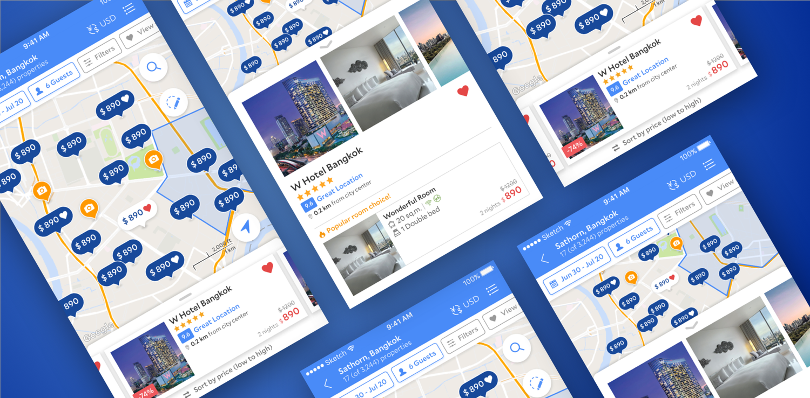
Context
On mobile, the map is a high-intent surface: people scan clusters of pins, open cards for a subset of properties, and expect filters, sorting, and pricing to stay coherent as they pan and zoom. When map UI, density, and affordances drift from list search—or from each other—travelers hesitate, and the product loses the “one mental model” advantage of map-first discovery.
The work sat alongside PMs and engineers responsible for inventory, pricing, and performance; design had to make spatial search legible without overwhelming small screens or hiding critical trade-offs (distance, price, availability).
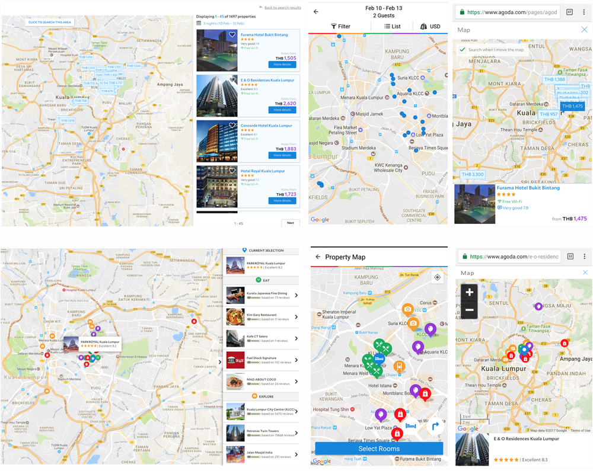
Competitive landscape
We benchmarked how travelers learned map affordances elsewhere—pin density, card peek vs full sheet, filter entry points, and how price showed up at a glance. The goal was not to copy, but to align on expectations so Agoda’s map felt familiar on day one while still supporting Agoda-specific merchandising.
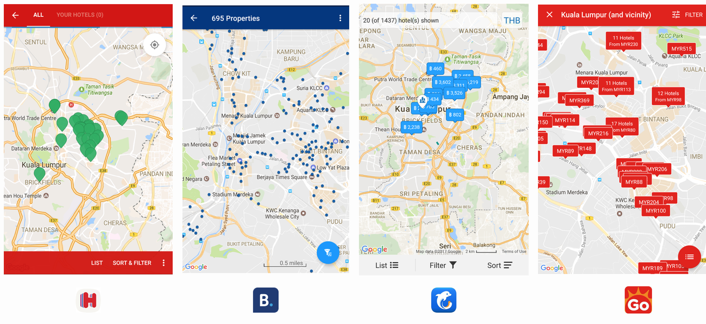
Research and discoverability
Lab sessions and targeted interviews helped separate “map as novelty” from “map as decision tool”: where people looked first, how they compared two pins, and when they bounced back to list view. A dedicated discoverability lens tracked whether primary actions were visible during pan/zoom and in dense pin clusters.
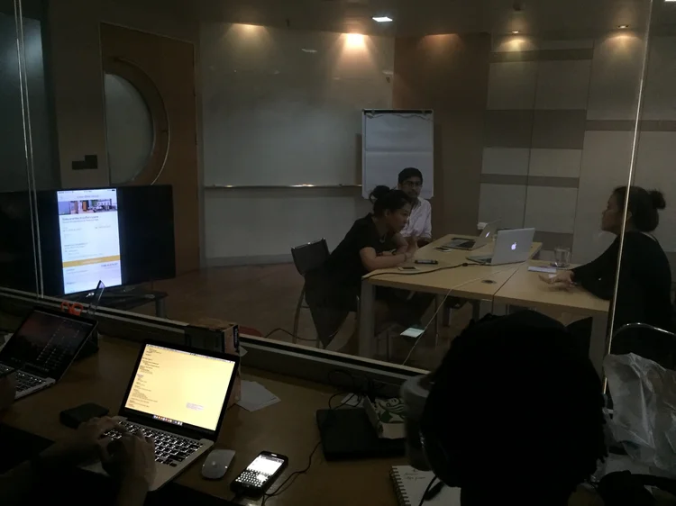
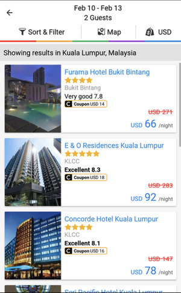
Approach
We moved from insights into explicit hypotheses—each testable in prototype or build—so debates became about evidence, not taste alone. Directions covered price signaling on the map, filter parity with list search, card ergonomics, and how much automation to introduce (for example search-this-area vs manual control).
- Hypothesis-led UI. Articulated options as falsifiable bets (clearer pins, richer cards, shared sort/filter language).
- Iteration in the open. Named variants for critique and usability so engineering could trace decisions to research IDs.
- Motion as feedback. Reserved animation for spatial continuity and confirmation—not decoration—across the shipped flows below.
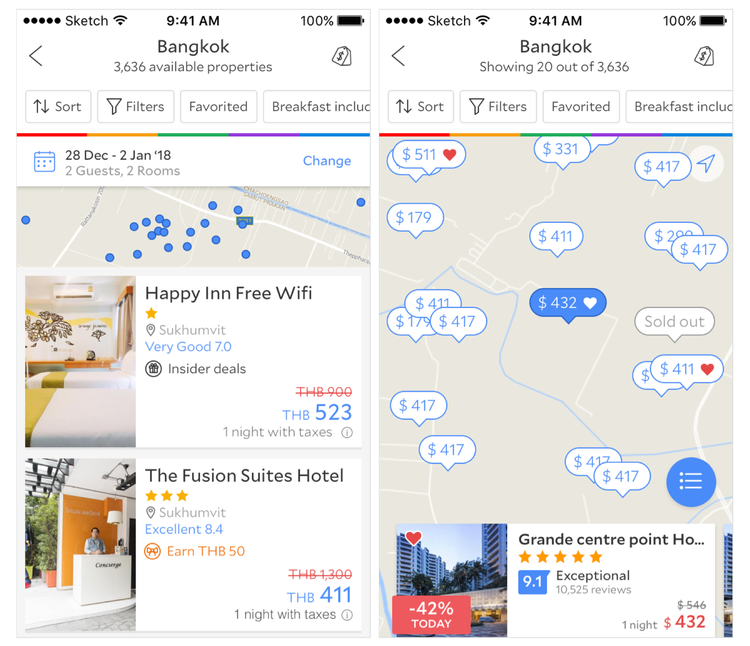
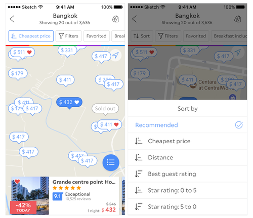
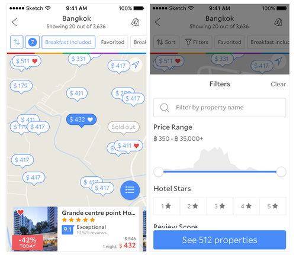
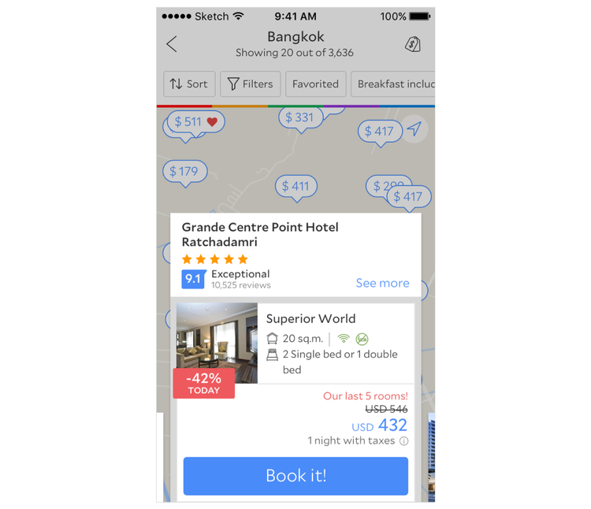
Explorations and usability variants
We pressure-tested edge cases: crowded downtowns, low-contrast pins, swipe-heavy cards vs static sheets, and whether “search this area” should auto-run or stay explicit. Each variant went into research with a clear success signal (task completion, comprehension, preference).
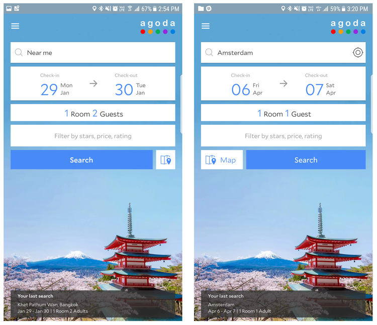
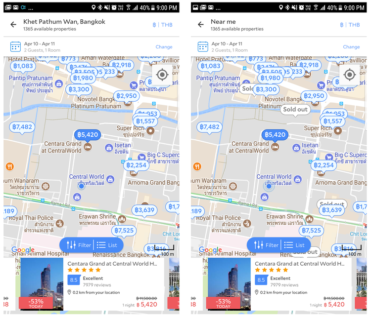


Before and after
The program converged on a clearer map-first story: predictable pins, cards that respect thumb reach, and filters that read as the same system as list search. The composite below captures the shift in one view for portfolio storytelling.

Pins and cards
Pin states and card content were designed as one system: selecting a pin had to feel continuous with the card that appears, with price and distance legible at a glance and next steps obvious without covering the map entirely.


Outcome
The shipped experience tightened map-led discovery: clearer hierarchy on the map, more honest contrast for pins, and filter/sort behavior that matched traveler expectations from list search. Specific metrics stay internal, but the north star was higher confidence in spatial decisions and fewer dead ends when moving between map, cards, and booking paths.
Motion in the shipped flows
These clips highlight transitions that survived research and build: continuity when changing scope, feedback on pin selection, and motion that reinforces—not obscures—geography.

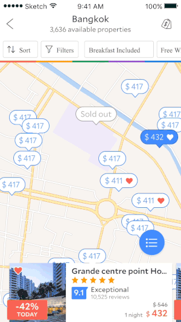
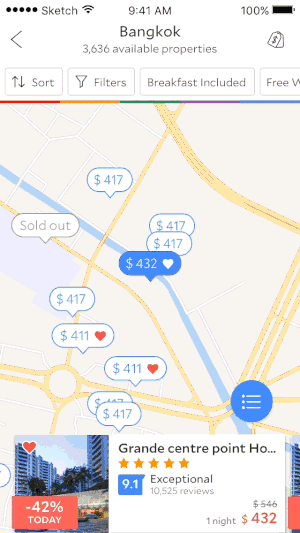
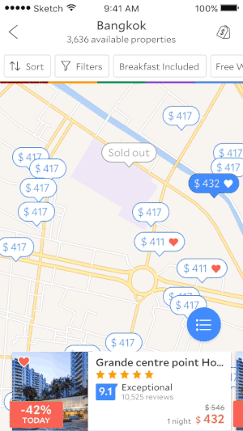